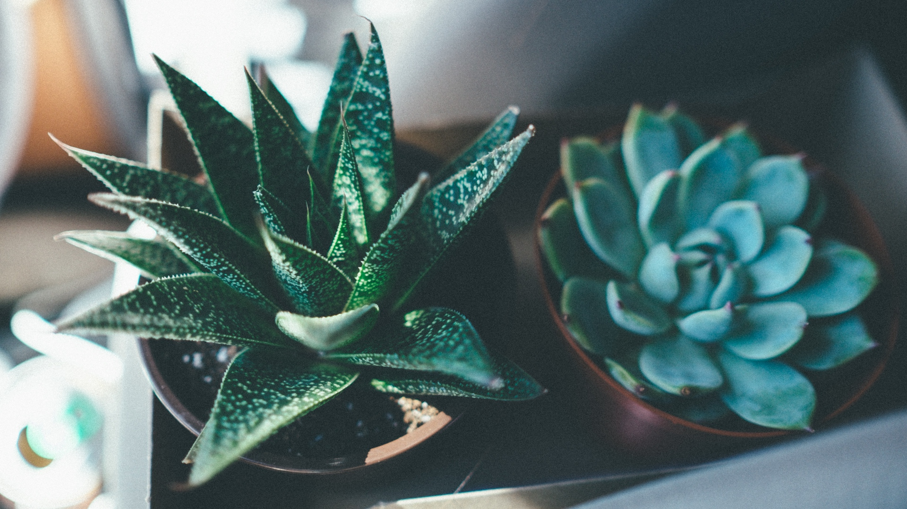
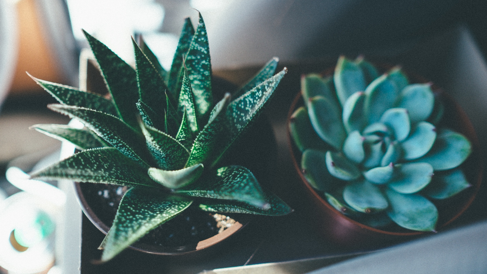

suculentus, suculenta, suculentum
If you’re on a mission to find the perfect plant to grow in your home or garden, chances are you’ll find it in the succulent section of your favorite plant nursery. This very large plant family includes varieties for all types of growing conditions.
Botanists don’t agree on the definition of a succulent. One thing they do agree on is that All cactus are succulents but not all succulents are cactus. To keep it simple, perhaps the best way to think of succulents is to think of them as plants that store water in their tissues.
Proper succulent care can be easy, as long as you know a few basics.
Proper succulent care can be easy, as long as you know a few basics. Succulents like to have their soil soaked and then dry out before watering again. So, soak the soil and then let it dry completely. Know that they don’t like too much water. In order to allow soil to dry out between watering you’ll need a well draining soil. The basic idea is that you need to mix in something light and porous into regular soil to increase the drainage. Adding perlite to soil at about a 1:1 ratio will do the trick.
Succulents need a lot of sunlight to grow happy and healthy, but they are very prone to sunburn. If they are outside put them somewhere they will receive some shade and stay relatively cool. Morning light is good with a bright shade in the afternoon. If your plants are inside, put them somewhere they’ll receive bright light for most of the day. They are less likely to get sunburned inside, but it can still happen.
As long as you follow these tips you should be able to grow your succulent garden in no time.


 
